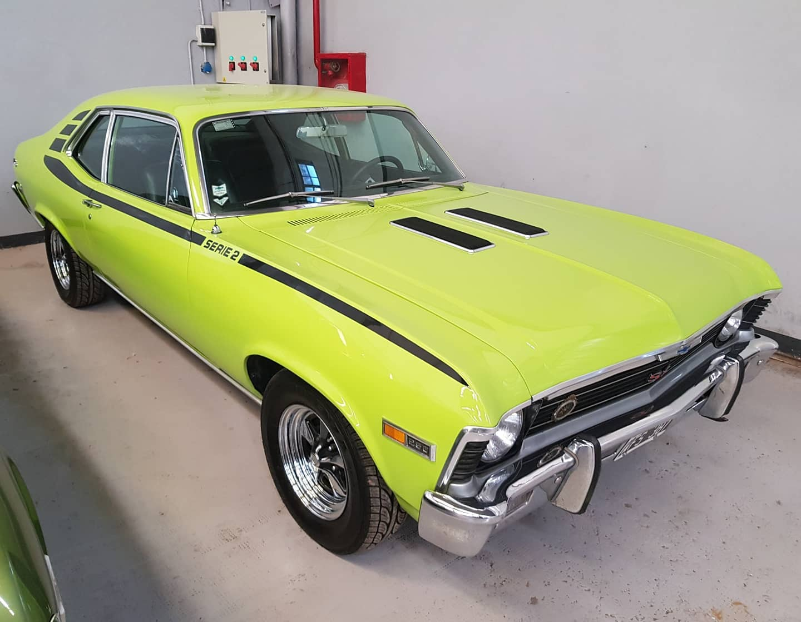
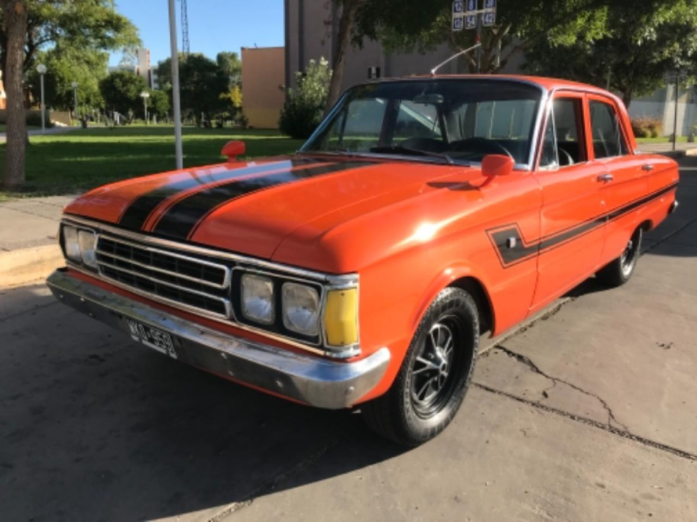
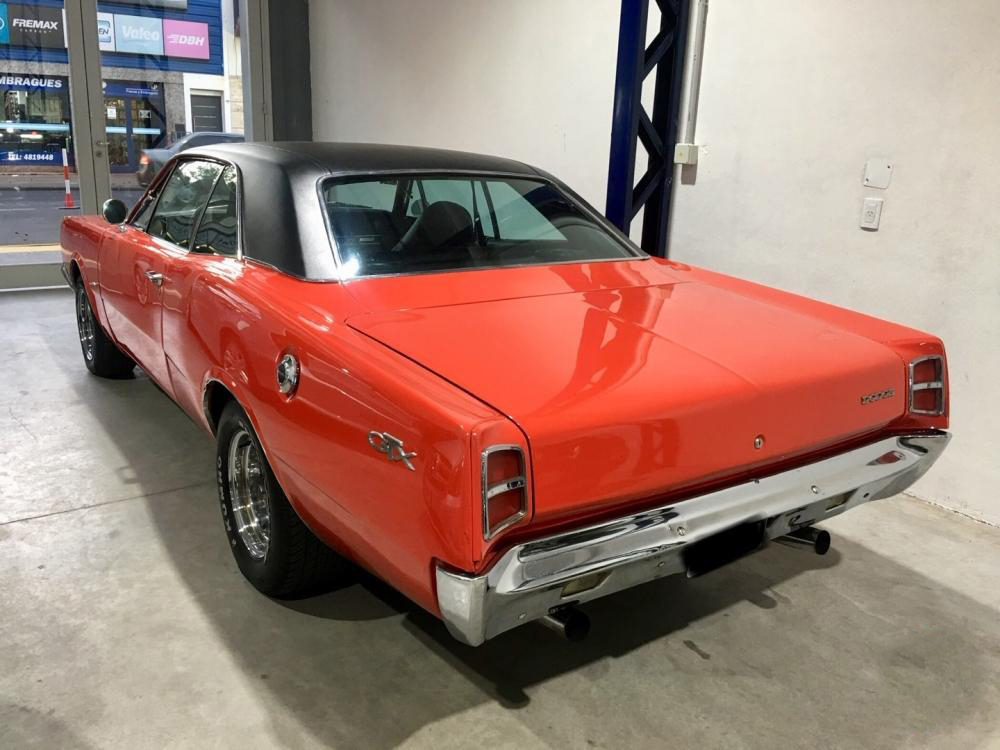
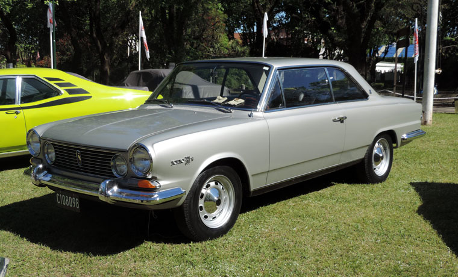

AUTOS
Chevrolet Chevy Coupe Serie 2
El ultimo modelo de la Coupe Chevy se destaca por la combinacion de colores de su carroceria, y unas
llantas de distinto diseño. Ademas se le reemplazo el carburador Holley de una boca por otro de dos
bocas. Algunas de sus virtudes son que tiene una muy buena aceleracion, un consumo de combustible
normal, gran capacidad de baul, frenos eficaces, etc.

Ford Falcon
El Ford Falcon vino en distintas versiones, y una motorizacion bastante destacada que es el 221, un
motor muy noble y robusto. Cuando salio a la venta su precio era logico, y tenia varias
caracteristicas positivas para la postura de manejo, como una buena precision en la caja de cambios,
butacas comodas, accesorios completos, etc.

Dodge GTX
La Dodge GTX salio de fabrica con un motor V8 de una cilindrada de 5210cm3. Conto con un techo
vinilico y su insignia caracteristica "GTX" en el guardabarro trasero. Una de sus cualidades es que
tiene gran agarre sobre el camino. Tambien los frenos estaban acorde a la motorizacion que llevaba y
un bajo consumo para ser un V8.

Torino 380W
Esta version del Torino vino equipado con un motor seis cilindros en linea, y su "W" en su modelo
significa que viene con 3 carburadores Weber doble cuerpo. Un interior con detalles en madera
acompañado de una carroceria muy bien definida esteticamente.
